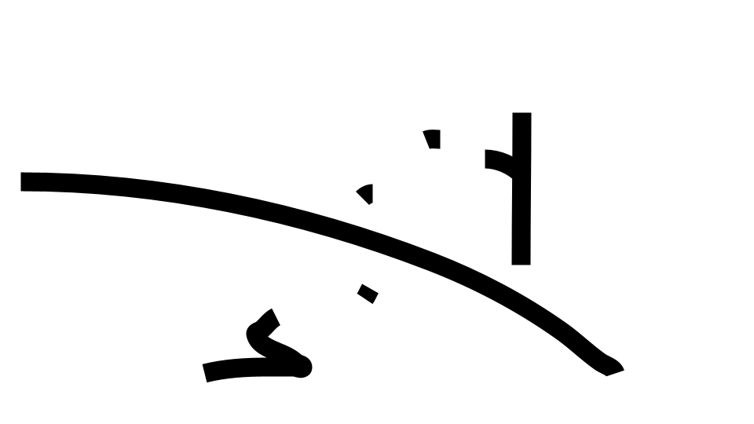
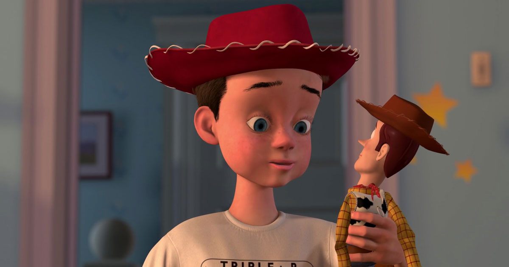
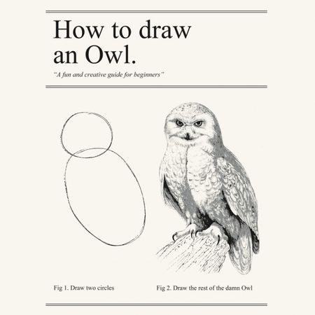

What is this?
Story time
"Make a card flip over"
What we're talking about
Design for non-designers
aka doing the least
to create an experience
A picture of a guy throwing pieces of bread to a duck in a pond

How do you know?
Method 1
Labeling
Case study
Craigslist
Better method
 How do you know what this is?
How do you know what this is?
Method 2
Skeuomorphism
Faking real-world things
Doesn't take much
Also button
What makes this more button-y?

More real ≠ better
Wat <---------- OK! ---------- Creepy ----------> Realistic
Consider the face of Google
From Material Icons
Now consider Andy

Artists are lazy too
An old trick:

You don't need the rest

Even 4 year-olds get this
Smiley faces
Stick figures
Water
Birds
Trust your users to fill in the blanks

In conclusion
What's behind Mario?